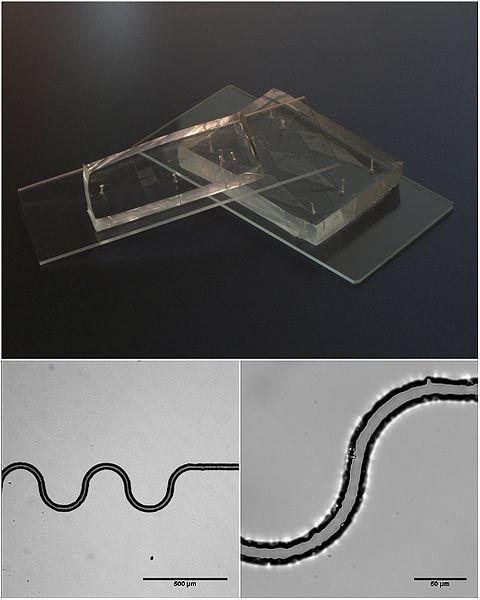
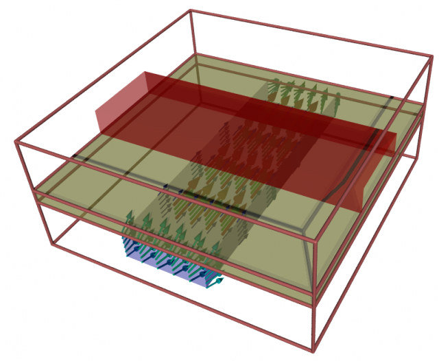

Microfluidics
Microfluidic devices played a leading role in the sequencing of human DNA during the Human Genome Project, resulting in its completion ahead of initial estimates. They can also be found in most inkjet printers controlling the ink sprayed onto a page. Further advances in the design and manufacture of microfluidic devices, such as the so called lab-on-a-chip, show promise for a revolutionary range of applications.
Microfluidic DevicesLicense: CC BY-SA 3.0, Richard Wheeler
Definition
Microfluidics encompasses the study of fluid movement, usually as a liquid, through 10-1000 micron (1e-6 m) channels. For a sense of scale, consider that a micron is 100 times smaller than the diameter of a human hair. The miniaturization of fluid processing (as found in medicine and environmental testing) into a convenient lab-on-a-chip (LOC) promises the rapid and routine deployment, in the field, of previously big lab-bound processing techniques.
At such small scales the fluid in microfluidic devices is dominated by laminar viscosity and surface tension effects. The same surface tension effects allow insects such as pond skaters to literally walk on water. Laminar flow is characterized by a smooth boundary-conforming fluid, unlike turbulent flow which exhibits chaotic eddies and recirculation zones. The Reynolds number is an indicator of whether a fluid is likely to encounter laminar or turbulent flow and it is proportional to a characteristic length such as channel width. The minute scales of microfluidic devices ensure that the Reynolds number is low and therefore all flow is laminar.
Without turbulent mixing in microfluidic devices, it is possible to encapsulate, for example, droplets of water in oil as an emulsion to hold minute, but precise, concentrations of reactants to either observe or process.
Additional control of droplets within a microfluidic device is possible by applying an electric field to either attract or repulse other droplets. This method of droplet control can govern the size of droplets and the rate at which droplets combine with others.
Manufacture
Micron-size manufacturing using traditional mechanical engineering machine tools is difficult and expensive. Currently the most cost effective means to manufacture a LOC is an extension of the layered miniaturization technique (photolithography) used for manufacturing microelectronics such as the Central Processing Unit (CPU) in a computer.
Microfluidic Valve
Recent advances in microfluidic manufacturer have allowed a silicon rubber membrane to be layered on a device to act as a rudimentary valve to control fluid flow rates. The membrane separates 2 channels perpendicular to each other. Applying a pressure to the fluid in one channel causes the membrane to deflect and effectively blocks the other channel.
Applications
As already mentioned, microfluidics has made its mark on DNA sequencing during the Human Genome Project and inkjet printers. Other promising application areas are:
- Proteomics – the study of protein structures and functions related to living organisms
- Clinical pathology – diagnosis of diseases using body fluids such as blood and urine
- Continuous, real-time analysis and detection of biochemical toxins and pathogens in water or air
Analysis
A liquid (such as water) confined to move in a microfluidic environment can still be simulated using traditional continuum (or macroscopic) fluid dynamic techniques incorporating the Navier-Stokes equations , i.e. Computational Fluid Dynamics (CFD). Even though the liquid is moving within minute channels, these channels are still much larger than the mean-free-path (average distance between molecule collisions) of liquid molecules and therefore the continuum assumption is still valid.
If a gas (such as air) with its larger mean-free-path is confined to micron-sized channels then the continuum assumption of the Navier-Stokes equations begins to breaks down and instead discrete particle modeling (rarefied gas flow analysis) such as Lattice Boltzmann is more appropriate, but significantly more computationally expensive.
Feedback
Questions? Ideas? Problems?

Recent blog posts
- CFD Simulates Distant Past
- Background on the Caedium v6.0 Release
- Long-Necked Dinosaurs Succumb To CFD
- CFD Provides Insight Into Mystery Fossils
- Wind Turbine Design According to Insects
- Runners Discover Drafting
- Wind Tunnel and CFD Reveal Best Cycling Tuck
- Active Aerodynamics on the Lamborghini Huracán Performante
- Fluidic Logic
- Stonehenge Vortex Revealed as April Fools' Day Distortion Field
 Get our Blog feed
Get our Blog feed